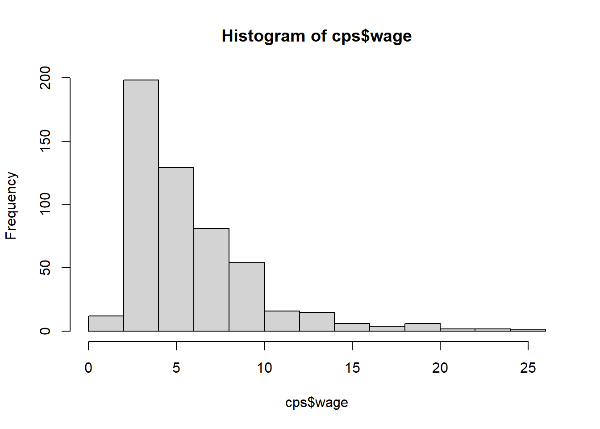
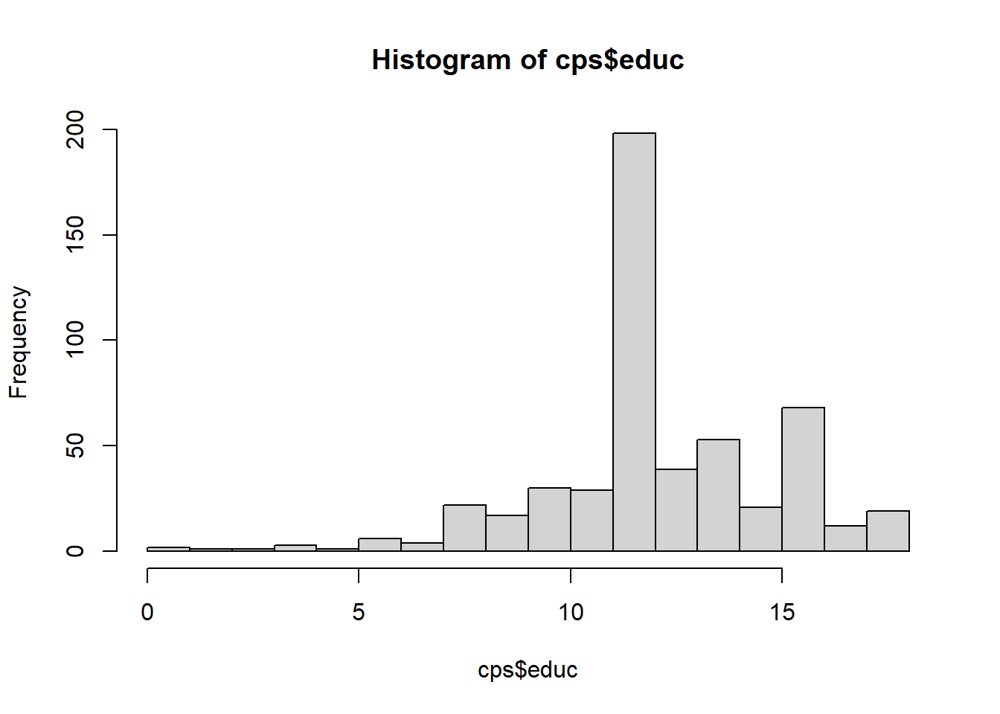
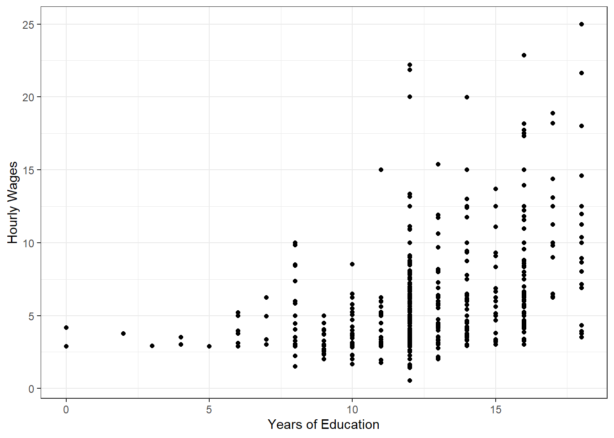
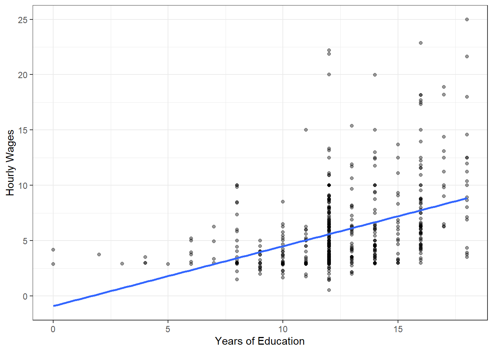
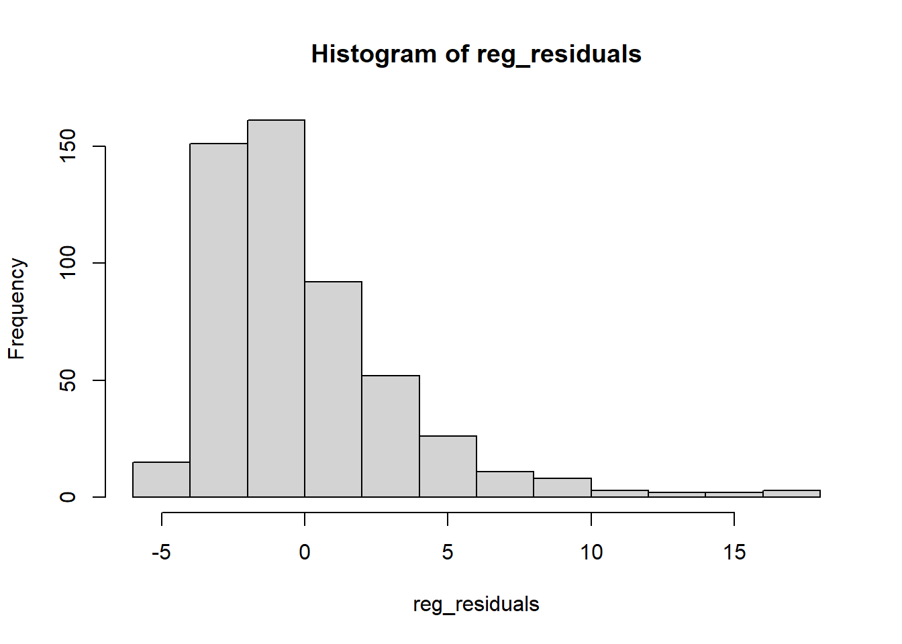
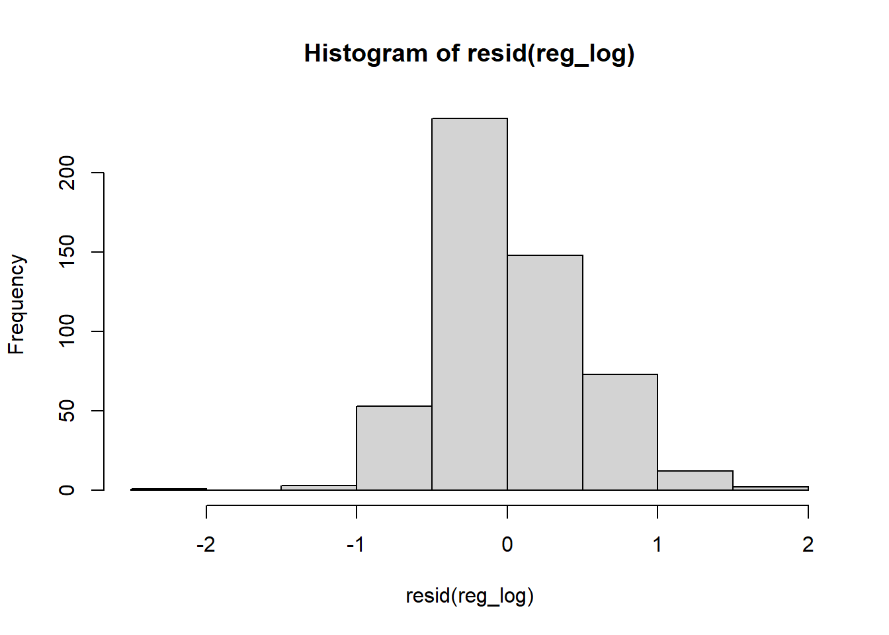
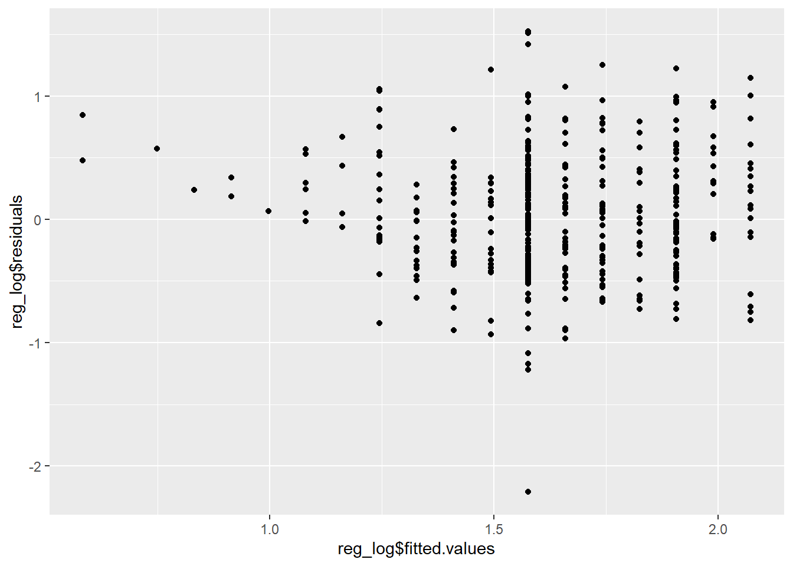

library(tidyverse)6 Linear Regression
Most research in the social sciences, including the projects you will embark on shortly, relies on what we call observational data. Unlike experimental data, which has the benefit of being produced in a controlled environment, observational data has the problem of being produced in the world around us, where many of the variables we might wish we could manipulate are beyond our grasp.
Consider, for instance, the rather different problems faced by two researchers. One wishes to understand the effect of a new blood pressure pill. The other wishes to understand how varying levels of education affects the income of children later on in life. In the former, the path to understanding is clear: we can recruit research participants, randomly assign them to groups, and then we can give one group the new blood pressure medicine and the other a placebo. The difference in blood pressures between the two groups at the conclusion of the study will tell us whether the new medicine worked or not. In the latter case, however, we’re unlikely to make it this far. Parents, as it turns out, are rather reluctant to hand their children over to a merry band of researchers promising that they may or may not give them an education. University ethics boards, and usually the researchers themselves, also generally protest this type of research as well.
For ethical or practical reasons - you can imagine the difficulty in assigning an entire country to a treatment group for a study on cross-national differences, after all - estimating causal effects through experimental methods simply isn’t a viable option for most social science research questions. Hence, our need to rely on observational data. The resulting challenge, of course, is that isolating relationships between variables out in the real world can be exceptionally difficult. People lead complex social lives, to say nothing of the organizations and structures they compose, and if we want to say something meaningful about them we need not only need good data, but also methods which can help untangle the relationships between them.
Linear regression is one such method and the subject of this chapter. It is important to realize at this stage that what linear regression can tell us about relationships between variables is often limited. It does not, except under specific circumstances, measure cause-and-effect. Instead, it is best viewed as a method for identifying statistical relationships between variables. In this respect, it is perhaps the most capable and important tool available to social scientists.
This chapter will primarily deal with the pragmatic aspects of using linear regressions in R rather than with the other important statistical considerations involved in its application, including assumptions and how it is estimated. For treatments of these, I recommend Chapters 7-10 and 24-27 of the freely available Introduction to Modern Statistics (including associated tutorials in R, which can be found here). For more detailed and math-heavy treatments of the topic, consider Wooldridge’s (2019) Introductory Econometrics: A Modern Approach, 7e or Angrist and Pischke’s (2008) Mostly Harmless Econometrics.
6.1 Some Data Exploration
The data set we’ll use for this demonstration comes from Wooldridge (2019) and was originally taken from the U.S. Census Bureau’s 1976 Current Population Survey.1 It contains data on a small number of individuals living in the U.S. in 1976 for a series of variables such as education (educ), average hourly earnings (wage), work experience (exper), gender (female), and whether they work in a particular industry or not (e.g., construc).
Rather than load it directly from a CSV file saved on your computer, we’ll load it from a CSV hosted on a website this time. On rare occasions, you might find other CSV files saved in this manner and you can either download them and then load them into your project in the usual manner or you can load them directly from their address on the internet.2 read_csv() is capable of handling either.
# Storing the web address in an object, which makes the code more readable.
url = "https://raw.githubusercontent.com/wstubenbord/ScPoSPSSUR/master/data/wage1.csv"
# Reading the CSV file from the website.
cps <- read_csv(url)
# Alternatively:
# cps <- read_csv(file = "https://raw.githubusercontent.com/wstubenbord/ScPoSPSSUR/master/data/wage1.csv")As usual, we might want to take a glimpse at the data so that we know what’s inside.
glimpse(cps)We also might be curious about the distribution of hourly earnings. We can check it with a quick histogram.
# Create a histogram with the base R hist() function.
hist(cps$wage)
As is often the case for income data, the distribution of the wage variable here is right-skewed, which means that most values are located around the mean but a few values are scattered along the right-hand side of the distribution. If we want to get a more detailed sense of the distribution, one option is to use the base R function quantile() to look at the wages across certain percentiles of the distribution. In this case, we’ll look at deciles, which will show us the values for every 10th percentile.
# The probs argument specifies the desired range of the percentiles returned and
# the increment. In this case, we want to see deciles of income, so we use a
# 0.1 increment. But, if we wanted to see quartiles, for example, we would use
# a 0.25 increment.
quantile(cps$wage, probs = seq(0, 1, 0.1), na.rm = TRUE) 0% 10% 20% 30% 40% 50% 60% 70% 80% 90% 100%
0.53 2.92 3.13 3.50 4.05 4.65 5.70 6.34 8.02 10.00 24.98 The results above show that 10 percent of the wage earners in this sample earned less than $2.92 per hour and 90 percent earned less than $10.00. The median hourly wage was $4.65. Perhaps this isn’t surprising, given that the data is from the 1970s. Try using the quantile() function to see if you can find the cut-off for the top 1% of wage earners in this data set. Check the answer below when ready to see if you managed to get it right.
Answer
This is one possible solution. As you can see, the top 1% threshold is $19.995.
quantile(cps$wage, probs = seq(0.95, 1, 0.01), na.rm = TRUE) 95% 96% 97% 98% 99% 100%
12.875 13.950 15.095 18.080 19.995 24.980 Let’s take a look at education now. From glimpse, we know that educ is a double, a numeric value that can hold decimals. Let’s try summary() first and then we’ll see where it takes us.
# A 5-number summary
summary(cps$educ) Min. 1st Qu. Median Mean 3rd Qu. Max.
0.00 12.00 12.00 12.56 14.00 18.00 # A quick histogram. The breaks argument and seq() function specify the bin
# intervals. Each bar represents the count for a year of education.
hist(cps$educ, breaks = seq(0, 18, 1))
We can see from the histogram above that most of the respondents in this data set had 12 years of education, which corresponds to the standard length of a high school education in the U.S. We might want to check a couple more things:
# How many distinct values are there?
cps %>%
distinct(educ) %>%
arrange(desc(educ))# A tibble: 18 × 1
educ
<dbl>
1 18
2 17
3 16
4 15
5 14
6 13
7 12
8 11
9 10
10 9
11 8
12 7
13 6
14 5
15 4
16 3
17 2
18 0# What are the frequencies for each?
# Here we're using the tabyl() function from the janitor package, which creates
# the same type of frequency and proportion table we made previously using
# summarize() and mutate.
cps %>%
janitor::tabyl(educ) educ n percent
0 2 0.003802281
2 1 0.001901141
3 1 0.001901141
4 3 0.005703422
5 1 0.001901141
6 6 0.011406844
7 4 0.007604563
8 22 0.041825095
9 17 0.032319392
10 30 0.057034221
11 29 0.055133080
12 198 0.376425856
13 39 0.074144487
14 53 0.100760456
15 21 0.039923954
16 68 0.129277567
17 12 0.022813688
18 19 0.036121673One other thing we can note here is that educ is actually an integer, a discrete quantitative variable, rather than a double, a continuous quantitative variable. The values are all whole numbers. We could change the type of educ to integer to correct this, but since integers stored as doubles almost never cause problems, we won’t bother. 3
A natural question that might follow is: is there a relationship between years of schooling and wages? Let’s plot it first.
cps %>%
ggplot(mapping = aes(x = educ,
y = wage)) +
geom_point() + theme_bw() +
labs(x = "Years of Education",
y = "Hourly Wages") 
On first inspection: maybe. There certainly seems to be more variation in hourly wages as years of education increase. At least on visual inspection, wages appear to increase as education increases. We can check the correlation to give us a more concrete idea of the linear association.
cor(cps$wage, cps$educ)[1] 0.4059033The correlation is around 0.41, which is a moderately strong, positive correlation. It’s not very strong, but it is an indication of some linear relationship between hourly wages and education.
If we were to stop here, we wouldn’t have said all that much about the relationship between education and wages though. There is a correlation, but correlations can be spurious. Wages appear to increase as education increases, but we don’t know by how much. We also don’t know whether other variables might explain this apparent association. For all of these questions, we need to use linear regression.
6.2 Simple OLS Regression
You may remember from your previous statistics course that a simple ordinary least squares (OLS) regression follows the general form:
\(Y = \beta_{0} +\beta_{1}X_{1} + \epsilon\)
Where \(Y\) is the dependent (or outcome) variable, \(\beta_{0}\) is the intercept, \(X_1\) is the independent (or explanatory) variable, \(\beta_{1}\) is the coefficient, and \(\epsilon\) is the error term.4 We generate an estimate of the parameters \(\beta_{0}\) and \(\beta_{1}\) using sample data for our variables of interest, \(X\) and \(Y\), and the method of ordinary least squares, which minimizes the sum of squared residuals. The line of best fit estimated in this way takes the form:
\(\hat{y} = \hat{\beta}_{0} + \hat{\beta}_{1}x_1\)
Or equivalently:5
\(\hat{y} = \hat{b}_{0} + \hat{b}_{1}x_1\)
To put it more concretely in terms of the example we have been discussing:
\(\widehat{\textit{wage}}_{i} = \hat{\beta}_{0} + \hat{\beta}_{1}{\textit{educ}}_{i}\)
Where \(\textit{educ}_i\) is the level of education for a survey respondent, \(\hat{\beta}_{0}\) is the y-intercept, \(\hat{\beta}_{1}\) is the slope of the line (the estimated effect of education on hourly wage), and \(\widehat{\textit{wage}}_{i}\) is the predicted hourly wage for an individual with some level of education.
In terms of how this works in R, it’s rather straightforward. You provide an independent and dependent variable to a function and R calculates the rest. In fact, you’ve already done a version of this before using geom_smooth():
cps %>%
ggplot(mapping = aes(x = educ,
y = wage)) +
geom_point(alpha = 0.4) + theme_bw() +
labs(x = "Years of Education",
y = "Hourly Wages") +
geom_smooth(method = lm, se = FALSE)
With the argument method = lm, geom_smooth() automatically calculates the slope of the line of best fit (\(\hat{\beta}_{1}\)) and the y-intercept (\(\hat{\beta}_{0}\)) using the variables provided. It then draws the resulting line by connecting the predicted wage values (\(\widehat{\textit{wage}_i}\)) for each educ value. Easy enough!
To obtain the estimated slope and y-intercept, we can use a different function, lm(). lm() requires us to provide the formula of the model we are trying to estimate. To do this, we simply give the dependent variable, followed by a ~ to separate the two sides of the equation, and then the independent variable. We must also specify the data source in data =.
lm(formula = wage ~ educ, data = cps)
Call:
lm(formula = wage ~ educ, data = cps)
Coefficients:
(Intercept) educ
-0.9049 0.5414 In the resulting readout above, the y-intercept (\(\hat{\beta}_{0}\)) is -0.9049 and the slope (\(\hat{\beta}_{1}\)) or the coefficient for education is 0.5414. This means that the equation for the line of best fit drawn by geom_smooth() is:
\(\widehat{wage}_{i} = \hat{\beta}_{0} + \hat{\beta}_{1}({educ}_{i})\)
\(\widehat{wage}_{i} = -0.9049 + 0.5414({educ}_{i})\)
That’s the linear regression model. The model suggests that for each additional year of education, hourly wage increases by approximately $0.54. It also suggests that the hourly wage of someone with no education is $-0.90, which is of course not possible. Regressions can make useful predictions, but because they assume a linear relationship and we have very little data at the lower bound (near zero), we do have to be careful about extrapolating beyond the limits of our data.
6.3 Linear Regression Tables
Of course, just because we can calculate regression coefficients doesn’t mean the relationship being described is meaningful. For this, we have to consider two things: first, statistical significance and second, effect size.
For statistical significance, the primary concern is whether the slope coefficient is statistically different from zero. If it isn’t, then we don’t have sufficient evidence of a linear relationship between the dependent and independent variable. The answer to this question won’t be made immediately clear by looking at the results of either lm() or the scatter plot.
For effect size, the concern is not only whether there is evidence of a relationship or not, but whether the magnitude of the relationship is actually a meaningfully different from zero. We could have a statistically significant coefficient of $0.0001, for example, which would mean that each year of education increases hourly wage by very little. Although the coefficient might be statistically significant, practically, the result is not significant.
To find the p-value necessary to evaluate statistical significance, we can use the summary() function on our regression results. The best way to do this is to store the regression result in an object and then use the summary() function on it. Both lm() and summary() are contained in base R, so no special packages are necessary.
reg <- lm(formula = wage ~ educ, data = cps)
summary(reg)
Call:
lm(formula = wage ~ educ, data = cps)
Residuals:
Min 1Q Median 3Q Max
-5.3396 -2.1501 -0.9674 1.1921 16.6085
Coefficients:
Estimate Std. Error t value Pr(>|t|)
(Intercept) -0.90485 0.68497 -1.321 0.187
educ 0.54136 0.05325 10.167 <2e-16 ***
---
Signif. codes: 0 '***' 0.001 '**' 0.01 '*' 0.05 '.' 0.1 ' ' 1
Residual standard error: 3.378 on 524 degrees of freedom
Multiple R-squared: 0.1648, Adjusted R-squared: 0.1632
F-statistic: 103.4 on 1 and 524 DF, p-value: < 2.2e-16In this more detailed readout, we can find the coefficient estimate for education and the y-intercept (as before) along with some additional information, including the standard error (a measure of how precise our coefficient estimates are), the test statistic (a Student’s t statistic here), the p-values (Pr(>|t|)), and symbols for the statistical significance of each coefficient along with a handy key. Remember, social scientists generally use a threshold of \(p < 0.05\) to make a determination of statistical significance and decide whether to reject the null hypothesis or not. We can also find here the \(R^2\) or coefficient of determination value, which is a measure of how well the model fits the data.
Based on the information in this regression table, we can determine that there is a positive relationship between educ and wage and that it is statistically significant (i.e., unlikely to be the result of random chance alone). Given a p-value of less than 0.05, we would reject the null hypothesis that there is no relationship between education and wage.
6.4 Multiple Regression
What if we wish to control for other variables? In this case, we can use what is called multiple regression or multivariable regression. The process remains mostly the same, but our interpretation of the coefficients change.
Let’s say, for example, that we have reason to believe that the relationship between educ and wage has nothing to do with education. Instead, maybe it’s the case that those with more education also tend to have more work experience. Multiple regression allows us to test this conjecture by holding other variables constant as we examine the relationship between our key independent variable of interest (educ) and the dependent variable (wage). Often in a research project, we’ll have one or more independent variables of interest and then a series of other variables we wish to hold constant. The variables we hold constant are called controls.
Implementing a multiple regression is simple. All we need to do is add exper, the work experience variable in our data set, and any other controls we wish to use to the formula argument of the regression. For this example, we’ll also control for tenure (the number of years someone has worked for the same employer) and gender (in this case, a binary variable where 1 represents female and 0 represents male).
We’re describing a regression model that might take the form:
\(\widehat{\textit{wage}}_{i} = \hat{\beta}_{0} + \hat{\beta}_{1}({\textit{educ}}_{i}) + \hat{\beta}_{2}(\textit{exper}_{i}) + \hat{\beta}_{3}(\textit{female}_{i})\)
The implementation of which looks like this:
reg2 <- lm(formula = wage ~ educ + exper + female, data = cps)
summary(reg2)
Call:
lm(formula = wage ~ educ + exper + female, data = cps)
Residuals:
Min 1Q Median 3Q Max
-6.3856 -1.9652 -0.4931 1.1199 14.8217
Coefficients:
Estimate Std. Error t value Pr(>|t|)
(Intercept) -1.73448 0.75362 -2.302 0.0218 *
educ 0.60258 0.05112 11.788 < 2e-16 ***
exper 0.06424 0.01040 6.177 1.32e-09 ***
female -2.15552 0.27031 -7.974 9.74e-15 ***
---
Signif. codes: 0 '***' 0.001 '**' 0.01 '*' 0.05 '.' 0.1 ' ' 1
Residual standard error: 3.078 on 522 degrees of freedom
Multiple R-squared: 0.3093, Adjusted R-squared: 0.3053
F-statistic: 77.92 on 3 and 522 DF, p-value: < 2.2e-16We can see in our results that education, work experience, and gender are all statistically significant. Now, to interpret the education variable, we would say: a 1 year increase in education, holding work experience and gender constant, is associated with a $0.60 increase in hourly wage. Similarly, a 1 year increase in work experience is associated with a $0.06 increase in hourly wage on average, holding gender and education-level constant. And last, holding education-level and work experience constant, being female is associated with a $2.16 decrease in hourly wage.
You can see how multiple regression might be a powerful tool for examining relationships between variables.
6.5 Don’t P-Hack and Other Considerations
6.5.1 P-Hacking
Now that you have the tools to run regressions, it is important that you don’t misuse them. One way to misuse them is to take a data set and then start going wild, running regressions on every combination of variables possible. Because we live in a world inhabited by random chance and variation, it is quite likely that you will find statistically significant results this way. Statistical significance, after all, relies on the assumption that we will incorrectly assume meaningful relationships in 5 percent of cases.6 In other words, if you were to run regressions on a thousand samples from the same population and there was no relationship between the variables of interest, you would find statistically significant results in around 50 of those samples. So, will you find statistically significant results that don’t signify a meaningful relationship? Yes, and the point is that you shouldn’t purposefully hunt for them.
Here is a nice simulation from the data journalism site FiveThirtyEight that you can play around with to demonstrate the point.7
How to avoid p-hacking then? Don’t run a regression until you’ve written your theory and hypotheses and identified your controls. Running a regression should be one of the last things you do.
The downside to this, as you might imagine, is that you might spend a great deal of time developing a brilliant theory and nicely written hypotheses only to discover at the moment of truth that the relationship you are studying is not statistically significant. You’ve discovered null findings, which are sometimes disappointing, but still valuable to the scientific process. Here too the temptation to p-hack rears it’s ugly head. Don’t do it.
6.5.2 Residual Plots and the Assumptions of OLS
You might vaguely recall from your statistics course that residual plots can be a useful way to ensure that your regression meets some of the assumptions of the OLS model (namely, normally distributed residuals and constant variability).8 Conveniently, the lm() function produces the residuals as well. We can check whether the residuals are distributed normally with a histogram. We’ll use single-variable regression we ran earlier for demonstration purposes.
reg_residuals <- resid(reg)
hist(reg_residuals)
In this case, we can see that the residuals are not distributed normally, which means that we haven’t actually fit the appropriate model to our data and need to use some transformations. The proper fix for this particular issue is to take the log() of the wage variable in the regression model (just as we did in Chapter 4 with GDP). We’ve ignored this issue so far to simplify the interpretation of the coefficients.9
If we were to make this fix, however, the histogram shows the results:
reg_log <- lm(formula = log(wage) ~ educ, data = cps)
hist(resid(reg_log))
Nice and (nearly) normally distributed now. The other type of residual plot we may wish to make involves plotting the residuals against the predicted y-values. Here we’re looking for a scatterplot which shows no discernible pattern.
ggplot(mapping = aes(x = reg_log$fitted.values,
y = reg_log$residuals)) + geom_point()
As you can see, not quite what we were hoping for either. In this case, we’ve violated the assumption of equal variability. The corrections for this particular issue are beyond the scope of this course (this problem is called heteroskedasticity), but the long and short of it is that our current model may not be producing the best estimates for our slope coefficient and the p-value may not be entirely accurate as a result. If we were to correct for this issue, we would end up with similar conclusions but slightly adjusted estimates - not a death knell for this project, but a potential issue to be aware of.10
6.6 Exercise
In the time remaining, try using the gapminder data from the gapminder package to test another regression.
Filter the data so that you only have values for 2007. Then, regress life expectancy (
lifeExp) on economic growth (gdpPerCap). In other words, life expectancy should be the dependent variable and GDP per capita should be the independent variable.Try interpreting the coefficient for
gdpPercap. Is the coefficient statistically significant?Try controlling for the effects of population (
pop). Is the coefficient for GDP per capita still statistically significant? Does population appear to have an effect on life expectancy?
Other data sets from Wooldridge’s (2019) textbook, which have the advantage of being nice and clean, are available in the
wooldridge↩︎Note that you can’t easily load CSV files directly from Moodle, because Moodle pages are password protected. This would require several interactions with a website (opening an address, entering a password, and then navigating to the CSV file), which is considerably more complicated.↩︎
In general, we have to be careful with dates and numeric values, which are often stored incorrectly stored as characters. This can cause problems (as we saw in the previous chapter where we had to convert a date) and sometimes needs to be corrected.
as.date(),as.numeric(), oras.character()can all be used to convert between data types. For the example previously given, you could use the following code to change it to an integer if you so desired:cps$educ <- as.integer(cps$educ). Again, it serves no real purpose here though.↩︎\(\beta\) is the Greek letter beta and \(\epsilon\) is the Greek letter epsilon. We use Greek letters in statistics to denote population parameters.↩︎
These two forms, using \(\hat{\beta}\) or \(\hat{b}\) are the same. It’s simply a matter of differing nomenclature.↩︎
This is known as a Type I error.↩︎
The associated article can be found here: https://fivethirtyeight.com/features/science-isnt-broken/.↩︎
The other assumptions of OLS are linearity and independent observations. Chapter 24 of Introduction to Modern Statistics is a good resource for further discussion on this topic.↩︎
In a linear regression with a log-transformed dependent variable, the coefficient for the independent variable indicates the percent change in Y associated with a one unit increase in X. For example, in the equation \(\widehat{log\_wage}_{i} = 0.5838 + 0.0827(educ_i)\) a one year increase in education is associated with an 8.3 percent increase in hourly wage.↩︎
Violations of OLS assumptions can lead to inaccurate conclusions, however, and in a more serious project we would want to make sure that we’ve corrected for these types of issues.↩︎